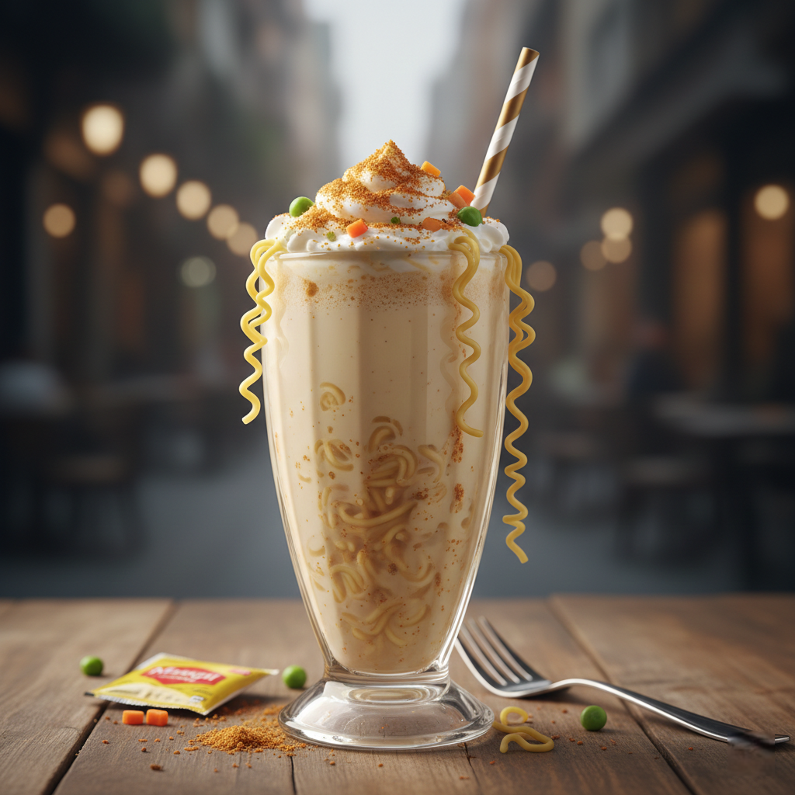

Maggi Milkshake

Creamy, savory, and oddly comforting, spiced Maggi blended into a smooth, warm milkshake that defies logic but seduces curiosity.
Description
Ingredients:
- Cooked Maggi noodles (without excess water)
- Milk (warm)
- Butter
- Maggi tastemaker
- Black pepper (optional)
Steps:
- Cook Maggi normally but slightly over-soften it.
- Add noodles, milk, butter, and tastemaker to a blender.
- Blend until smooth and frothy.
- Heat gently if needed and add pepper.
- Serve warm in a large glass and enjoy.
RETURN TO RECIPES